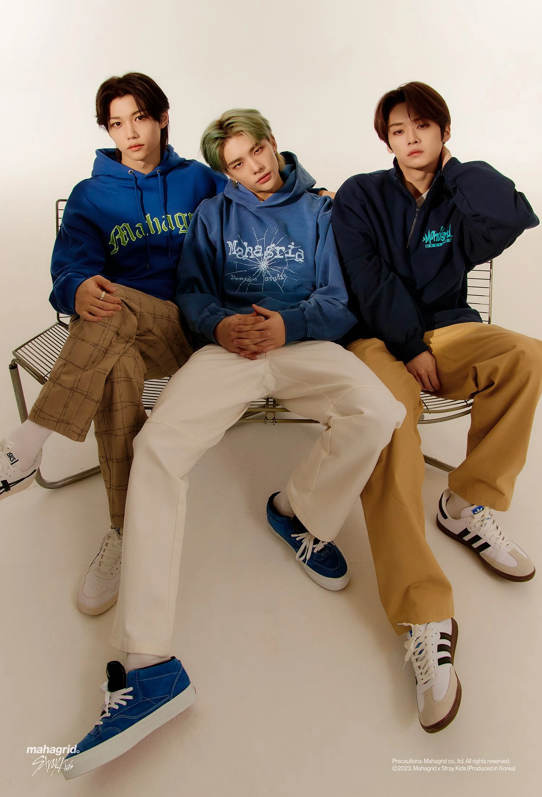
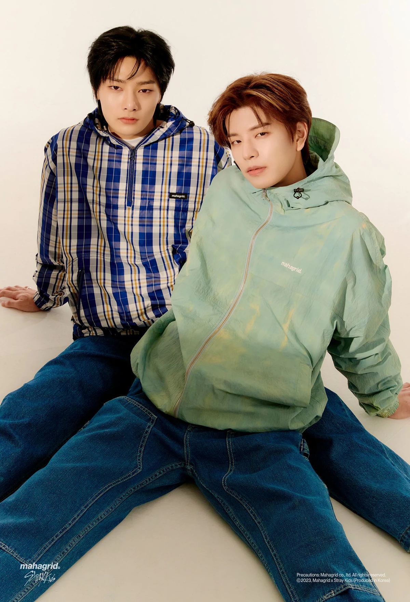

Subunits

3RACHA
The producing subunit of Stray Kids consists of Bang Chan as CB97, Changbin as SpearB, and Han as J.One. The group was formed in 2016 and officially debuted before Stray Kids on January 18, 2017. They uploaded their first untitled mixtape / extended play, J:/2017mixtape, onto SoundCloud. They uploaded their second extended play onto SoundCloud on August 16, 2017. Before this, they were announced to be a part of JYP's survival show titled Stray Kids. Since debuting with Stray Kids they have been in charge of the majority of the group's songwriting, composing, and producing.
Official Sites
Youtube - 3RACHA
SoundCloud - 3RACHA
Instagram - 3RACHA

DanceRacha
DanceRacha is another sub-unit of Stray Kids that consists of Lee Know, Hyunjin, and Felix, the group's primary dancers. The unit is also known as "VisualRacha" as it consists of three visual members of the group. DanceRacha unofficially debuted on August 26, 2018, with a video clip showcasing the unit's dancing and choreographing skills, as part of the SKZ-PLAYER series. Since the repackage album IN LIFE they occasionally release songs as a unit. As well, DanceRacha was selected as models for Etro's "Earthbeat" campaign in September 2021.

VocalRacha
VocalRacha is another sub-unit of Stray Kids that consists of Seungmin and I.N, the group's primary vocalists. Former member Woojin was part of this unit as he was the group's main vocalist. September 2, 2018, VocalRacha made an unofficial debut with a video clip showcasing the unit's singing skills as part of the SKZ-PLAYER series. With Woojin's departure from the group on October 27, 2019, VocalRacha remained as a 2-member unit. Since the repackage album IN LIFE they occasionally release songs as a unit.